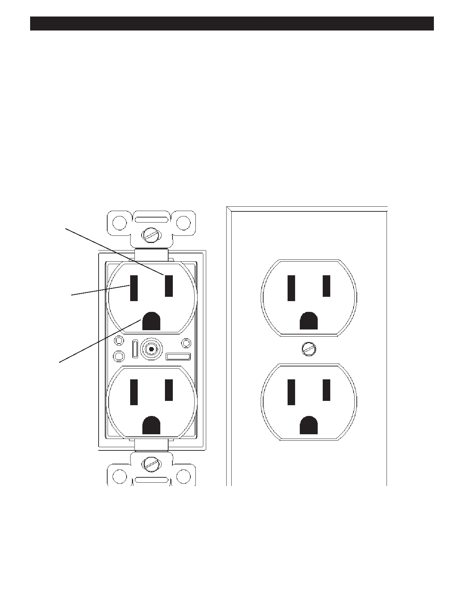

PA RT I C I PA N T R E S O U R C E G U I D E
Receptacles
An electrical receptacle (or outlet) is a socket into which the wiring for portable lamps,
appliances, and other electrical devices can be plugged. It provides the connection
between the building’s electrical circuit and the corded appliance or other device that
requires electricity to operate.
The Standard Duplex Receptacle
The standard duplex receptacle has two halves for receiving plugs with matching blades and pins. Each half has a long
(neutral) slot, a short (hot) slot, and a U-shaped grounding hole.
In addition, these receptacles are polarized, so hot current travels on red and black wires and neutral current travels on gray
or white wires. They are also grounded for safety.
“Hot” slot
Neutral slot
Ground
45